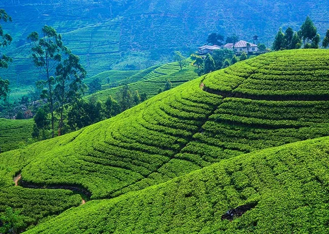

Central Highlands of Sri Lanka
Three distinct assets can be found in Sri Lanka's Central Highlands: Peak Wilderness Protected Area, Horton Plains National Park, and Knuckles Conservation Forest. Its forests are important on a worldwide scale and provide as habitat for a wide range of native plant and animal species. The property is home to some of the largest and least damaged remaining areas of Sri Lanka's submontane and montane rain forests, which are a top priority for worldwide conservation. They contain a portion of Sri Lanka's montane rain forests, which are recognized as a biodiversity hotspot in Sri Lanka and a super-hotspot within the Western Ghats.
The property contains the largest and least altered residual portions of Sri Lanka's submontane and montane rain forests, which are a top priority for conservation on a number of fronts. The component elements are spread throughout the Ceylonese monsoon forest and rainforest. The faunal components offer compelling evidence of geological and biological processes in the evolution and development of taxa in the montane forests represented by the three serial characteristics. Semnopithecus vetulus, a purple-faced langur native to Sri Lanka, has undergone evolution to take on multiple morphologically distinct variants that are still recognisable today. The Sri Lankan leopard is a distinct subspecies and the only member of the genus Panthera on the island. Panthera split off from other felids about 1.8 million years ago (Panthera pardus kotiya).
This indigenous to Sri Lanka subspecies of leopard can be found on all three of the selected properties.
The Sri Lankan molluscan fauna is the most distinctive in the South Asian region as a result of long isolation and the accompanying evolutionary processes.
